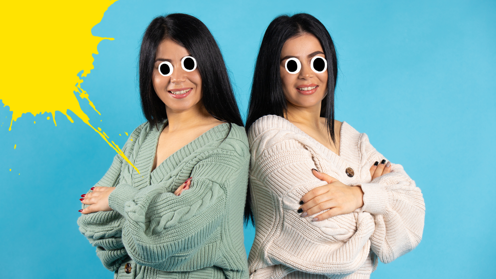
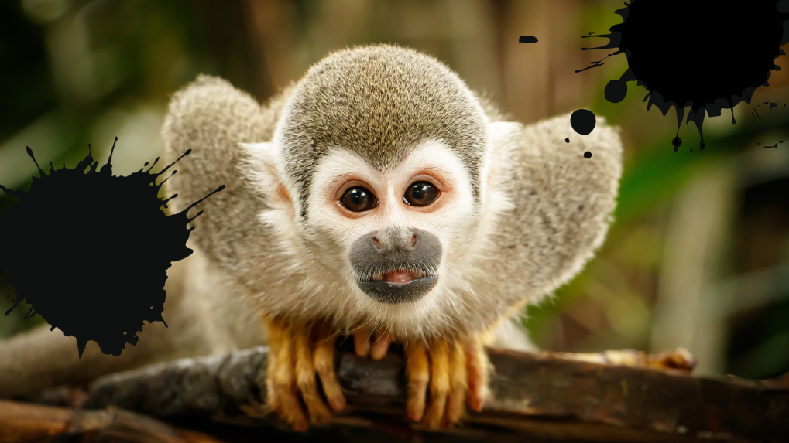
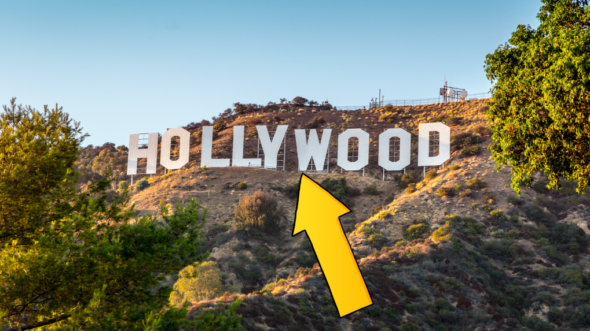

5 Fun Friends TV Show Facts You Never Knew
1. Friends wasn't called Friends
Originally, different name suggestions included: Six of One, Friends Like Us and Insomnia Café. In the end, they went with the simplest option, and we can all agree its the best! Insomnia Café doesn't really roll off the tongue...

2. Phoebe's twin was originally on another show
You probably remember Urusula as Phoebe's mean twin, who was always messing with her life. But you may not know her origin story! Lisa Kudrow played a waitress called Ursula on another sitcom called Mad About You. Since Lisa was appearing on both shows at the same time, and both were set in New York, the writers decided it would be funny to make Ursula a character on Friends too, as Phoebe's evil twin!
3. You can visit Central Perk in real life!
Central Perk (Like Central Park, geddit?) is sadly not a real cafe. BUT you can visit replicas of it, in Liverpool and China!
4. Marcel the monkey is a girl
She's called Katie and she's a pretty prolific actor, she's also been in 30 Rock among other things. Katie is a capuchin monkey, who are famous for being featured in films and tv because of their clever ability to learn tricks and expressions.
5. The show was filmed in LA.
Yup, not a single shot is filmed in New York! Even though it's arguably one of the most famous sitcoms set in The Big Apple, it was all filmed in Hollywood, California. The only exception is the shots of the apartments from the outside. They're real, and you can go and see them in Manhattan!
